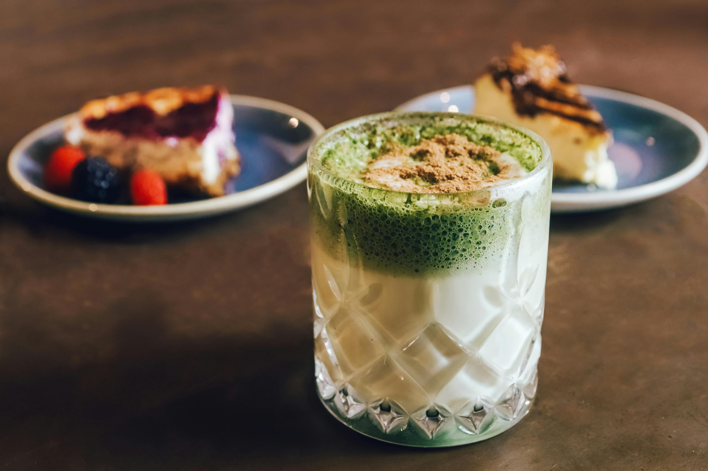

Home

Description
A delicious and indulgent mid-day treat that's perfect for satisfying your sweet tooth!
This Cookies n Cream Latte is made with a blend of creamy milk, sweet vanilla ice cream, and a generous amount of matcha powder,
creating a rich and flavorful base. The addition of crushed Oreos adds a deliciously crunchy texture and a chocolatey flavor,
This latte is perfect for a mid-day pick-me-up or as a sweet treat to enjoy any time of the day!
Ingredients
- 1 cup water
- 1 cup milk
- 1 scoop vanilla ice cream
- 1/2 cup ice
- 2-3 scoops -Approx 2 grams- Matcha powder
Instructions
- Sift Matcha Tea Powder
- Heat water to between 160-175°F
- Add 70ml warm water per 1.5 grams matcha powder
- Whisk vigorously in a zig-zag motion until frothy
- Combine ice cream and milk in a blender until smooth
- Pour matcha mixture into the blended mixture
- Add ice and oreos to mixture. Pulse blender for 5-10 seconds
- Pour into a glass and enjoy!